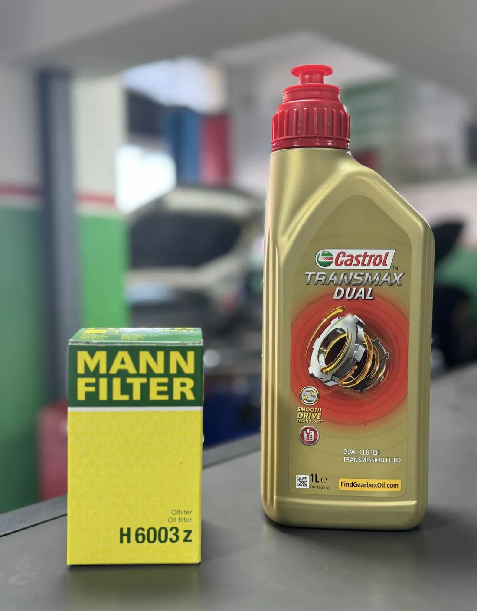

Entretien, vidange, diagnostic et réparation auto à Témara. Produits Castrol authentiques, équipe certifiée, service rapide.
Une gamme complète pour votre véhicule. Choisissez un service pour en voir le détail.
Moteur
Huiles Castrol 100% originales avec remplacement de filtre.
Sécurité
Plaquettes, disques et purge du liquide de frein.
Électronique
Scanner OBD professionnel et programmation toutes marques.
Confort
Recharge de gaz et entretien complet du système.
Expertise
Diagnostic, entretien et réparation toutes marques.
Boutique
Meilleures marques, montage et équilibrage inclus.
Mécanique
Changement d'embrayage et amortisseurs.
Entretien
Remplacement tous filtres : huile, air, carburant, habitacle.
Un service défile toutes les 5 secondes.
Le garage est installé à Résidence Khayzourane, avenue Tarik Ibn Ziad, et reçoit les automobilistes de Témara comme de Rabat. Ce que cet agrément engage, concrètement :
Huiles et filtres 100% originaux, traçables et certifiés.
Techniciens formés selon les standards internationaux Castrol.
Délais courts, transparence totale, propreté et équipements de haut niveau.

Appelez-nous ou passez directement au garage. Diagnostic gratuit, devis transparent, service rapide.
4,8/5
817 avis sur Google
Plus de 800 automobilistes de Témara et de Rabat ont noté le garage. La note est publique et vérifiable — nous n'avons rien à mettre en scène.
Dans cet atelier, j'ai toujours le sentiment que ces gens font les meilleurs choix pour votre voiture, pas les plus rentables pour eux. Leurs prix sont compétitifs et raisonnables. C'était ma deuxième visite, ce ne sera pas la dernière.
Service impeccable, merci à Ilyas et à l'équipe technique pour votre professionnalisme et votre gentillesse, je recommande vivement.
Excellente expérience chez Castrol Témara ! L'accueil a été chaleureux dès le départ. L'équipe est professionnelle, explique clairement les spécifications des huiles et donne de très bons conseils. J'ai fait une vidange complète moteur et boîte automatique. Les prix sont très raisonnables, et l'espace d'attente avec café est un vrai plus.
Service excellent, réparations rapides, fiables et précises. Personnel courtois et agréable. Prix raisonnable. Merci Castrol Auto Service de toujours prendre soin de notre voiture.
Nous voyageons en van, qui demande de l'huile 0W20, et quatre garages ne l'avaient pas. Eux l'ont, avec des rayons entiers d'autres viscosités. Ils ont fait la vidange et nous ont remis sur la route en un rien de temps.
Le meilleur garage de Rabat et Témara ! L'équipe est professionnelle, sympathique et très efficace ! Je recommande totalement.
Ma récente vidange au centre Castrol a été une expérience remarquable, portée par le professionnalisme du personnel. Le mécanicien M. Mustapha a réalisé le travail sans le moindre défaut.
Service excellent et prix raisonnables. Merci beaucoup, je vous ai recommandés à beaucoup de monde et vous ne m'avez pas déçue. Un merci particulier à M. Hassan.
J'ai beaucoup apprécié ce garage de réparation et d'entretien automobile : un accueil chaleureux, un service rapide et un professionnalisme sans égal. Je le recommande vivement à tous pour bien entretenir et préserver leur véhicule.
C'est l'endroit où aller si vous cherchez un professionnel qui prendra soin de votre voiture tranquillement. Du bon travail, le meilleur service à des prix raisonnables.
Service excellent et rapide. Qualité et prix parfaits. Très satisfaite. Le patron est aussi de très bon conseil sur ce qu'il faut faire ensuite.
J'ai fait entretenir ma voiture aujourd'hui chez Castrol Auto Service, et je dois dire que l'expérience m'a vraiment impressionné. Du début à la fin, le service a été exceptionnel. Merci Ilyass.
Avis publiés sur Google, traduits en français — lire les originaux.
Décrivez votre besoin en 30 secondes. Le message part sur WhatsApp, déjà rédigé — vous n'avez qu'à l'envoyer. Réponse pendant les heures d'ouverture du garage.